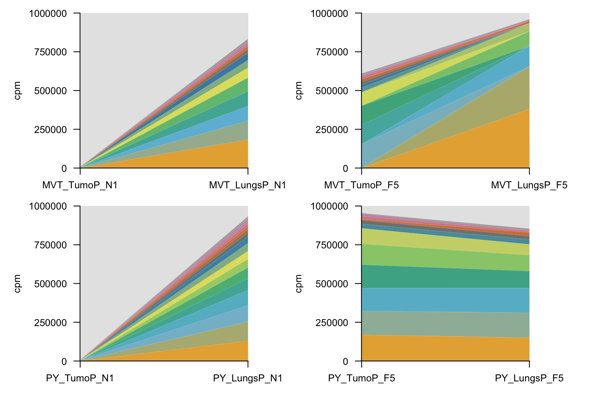
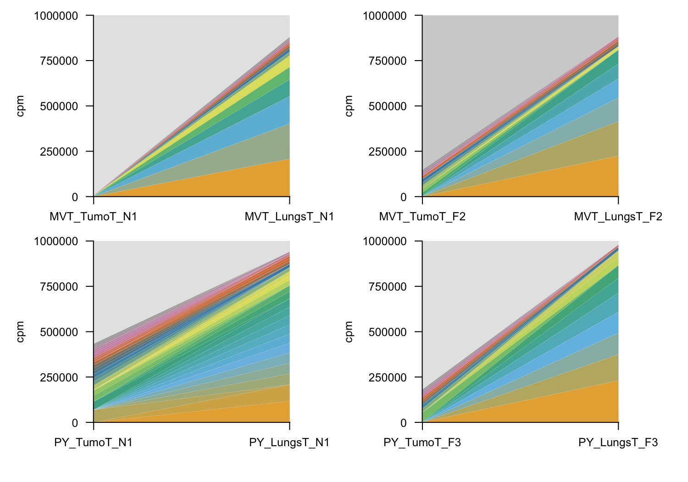

Clonal dynamics using mock CRISPR screen
Mouse libray (n = 2215)
Francesc Castro-Giner
October 31, 2025
Last updated: 2025-10-31
Checks: 7 0
Knit directory: saini-stealTHY/
This reproducible R Markdown analysis was created with workflowr (version 1.7.1). The Checks tab describes the reproducibility checks that were applied when the results were created. The Past versions tab lists the development history.
Great! Since the R Markdown file has been committed to the Git repository, you know the exact version of the code that produced these results.
Great job! The global environment was empty. Objects defined in the global environment can affect the analysis in your R Markdown file in unknown ways. For reproduciblity it’s best to always run the code in an empty environment.
The command set.seed(20240517) was run prior to running
the code in the R Markdown file. Setting a seed ensures that any results
that rely on randomness, e.g. subsampling or permutations, are
reproducible.
Great job! Recording the operating system, R version, and package versions is critical for reproducibility.
Nice! There were no cached chunks for this analysis, so you can be confident that you successfully produced the results during this run.
Great job! Using relative paths to the files within your workflowr project makes it easier to run your code on other machines.
Great! You are using Git for version control. Tracking code development and connecting the code version to the results is critical for reproducibility.
The results in this page were generated with repository version 455fa91. See the Past versions tab to see a history of the changes made to the R Markdown and HTML files.
Note that you need to be careful to ensure that all relevant files for
the analysis have been committed to Git prior to generating the results
(you can use wflow_publish or
wflow_git_commit). workflowr only checks the R Markdown
file, but you know if there are other scripts or data files that it
depends on. Below is the status of the Git repository when the results
were generated:
Ignored files:
Ignored: .DS_Store
Ignored: .Rhistory
Ignored: .Rproj.user/
Ignored: analysis/.DS_Store
Ignored: analysis/templates/.DS_Store
Ignored: code/.DS_Store
Ignored: code/raw_data_processing/rnaseq/p27851_o32062/pipelines/
Ignored: configuration/.DS_Store
Ignored: data/.DS_Store
Ignored: data/crispr/
Ignored: data/resources/
Ignored: data/rnaseq/
Ignored: output/.DS_Store
Ignored: output/clinical/
Ignored: output/crispr/
Ignored: output/rnaseq/
Untracked files:
Untracked: analysis/index.md
Untracked: analysis/style.css
Untracked: code/R-functions/subchunkify.R
Unstaged changes:
Modified: .gitignore
Modified: analysis/_site.yml
Deleted: analysis/crispr-hsapiens_2180_sgRNA_r1.Rmd
Deleted: analysis/crispr-mm_2215_sgRNA-clonality_r1.Rmd
Deleted: analysis/crispr-mm_2215_sgRNA-r2oC.Rmd
Deleted: analysis/crispr-mm_2215_sgRNA-r2oD.Rmd
Deleted: analysis/crispr-mm_2215_sgRNA-r2oD_r1.Rmd
Deleted: analysis/templates/docs/figure/gse-dotplot-amhr2_ko_culture--over--amhr2_control_culture_GSEA_msigdb.h-1.pdf
Deleted: analysis/templates/docs/figure/gse-dotplot-amhr2_ko_culture--over--amhr2_control_culture_GSEA_msigdb.h-1.png
Deleted: analysis/templates/docs/figure/gse-dotplot-amhr2_ko_notgfbeta--over--amhr2_ko_culture_GSEA_msigdb.h-1.pdf
Deleted: analysis/templates/docs/figure/gse-dotplot-amhr2_ko_notgfbeta--over--amhr2_ko_culture_GSEA_msigdb.h-1.png
Deleted: analysis/templates/docs/figure/gse-dotplot-amhr2_overexpression--over--amhr2_control_culture_GSEA_msigdb.h-1.pdf
Deleted: analysis/templates/docs/figure/gse-dotplot-amhr2_overexpression--over--amhr2_control_culture_GSEA_msigdb.h-1.png
Deleted: analysis/templates/docs/figure/gse-dotplot-amhr2_overexpression--over--amhr2_ko_culture_GSEA_msigdb.h-1.pdf
Deleted: analysis/templates/docs/figure/gse-dotplot-amhr2_overexpression--over--amhr2_ko_culture_GSEA_msigdb.h-1.png
Deleted: analysis/templates/docs/figure/gse-dotplot-amhr2_overexpression--over--amhr2_ko_notgfbeta_GSEA_msigdb.h-1.pdf
Deleted: analysis/templates/docs/figure/gse-dotplot-amhr2_overexpression--over--amhr2_ko_notgfbeta_GSEA_msigdb.h-1.png
Deleted: analysis/templates/docs/figure/gse-dotplot-invivo_amhr2_ko-+-amhr2_ko_culture--over--invivo_control_sgrna-+-amhr2_control_culture_GSEA_msigdb.h-1.pdf
Deleted: analysis/templates/docs/figure/gse-dotplot-invivo_amhr2_ko-+-amhr2_ko_culture--over--invivo_control_sgrna-+-amhr2_control_culture_GSEA_msigdb.h-1.png
Deleted: analysis/templates/docs/figure/gse-dotplot-invivo_amhr2_ko--over--invivo_control_sgrna_GSEA_msigdb.h-1.pdf
Deleted: analysis/templates/docs/figure/gse-dotplot-invivo_amhr2_ko--over--invivo_control_sgrna_GSEA_msigdb.h-1.png
Deleted: analysis/templates/docs/file/tmp/dge.xlsx
Deleted: analysis/templates/docs/file/tmp/gse_gsea_msigdb.h.xlsx
Deleted: analysis/templates/docs/file/tmp/gse_gsego_bp.xlsx
Deleted: analysis/templates/docs/file/tmp/gse_gsego_mf.xlsx
Modified: analysis/templates/rnaseq-deg-edger.Rmd
Modified: code/R-functions/gse_report.r
Modified: configuration/rmarkdown/color_palettes.R
Modified: configuration/rmarkdown/ggplot_theme.R
Modified: update_workflowr.R
Note that any generated files, e.g. HTML, png, CSS, etc., are not included in this status report because it is ok for generated content to have uncommitted changes.
These are the previous versions of the repository in which changes were
made to the R Markdown
(analysis/crispr-mm_2215_sgRNA-clonality.Rmd) and HTML
(docs/crispr-mm_2215_sgRNA-clonality.html) files. If you’ve
configured a remote Git repository (see ?wflow_git_remote),
click on the hyperlinks in the table below to view the files as they
were in that past version.
| File | Version | Author | Date | Message |
|---|---|---|---|---|
| Rmd | 455fa91 | Francesc Castro-Giner | 2025-10-31 | Prepare files for publication |
| html | a6972e9 | Francesc Castro-Giner | 2025-07-01 | Build site. |
| Rmd | b6bc770 | Francesc Castro-Giner | 2025-07-01 | update crispr analysis |
| html | f982e70 | Francesc Castro-Giner | 2025-05-13 | Build site. |
| Rmd | f249722 | Francesc Castro-Giner | 2025-05-13 | mod clonality figuress |
| html | 0e8d1db | Francesc Castro-Giner | 2025-05-13 | Build site. |
| Rmd | 748478d | Francesc Castro-Giner | 2025-05-13 | mod clonality figuress |
| html | e4cd8b5 | Francesc Castro-Giner | 2025-05-13 | Build site. |
| Rmd | ab1136c | Francesc Castro-Giner | 2025-05-13 | update clonality |
| Rmd | fa3898f | Francesc Castro-Giner | 2025-05-12 | updated revisions |
| Rmd | e513b99 | Francesc Castro-Giner | 2025-05-08 | update clonality figures |
| Rmd | 2dda789 | Francesc Castro-Giner | 2025-05-07 | update clonality figures |
| Rmd | 382cde0 | Francesc Castro-Giner | 2025-05-07 | update clonality figures |
| Rmd | c2a5c1c | Francesc Castro-Giner | 2025-05-06 | update r1od |
| Rmd | b6d9355 | Francesc Castro-Giner | 2025-05-01 | mod r2oD |
| Rmd | 5fab19d | Francesc Castro-Giner | 2024-05-28 | clean code |
| Rmd | 1920712 | Francesc Castro-Giner | 2024-05-24 | added F5 |
| Rmd | 628f8ec | Francesc Castro-Giner | 2024-05-24 | added F4 |
| Rmd | abf695c | Francesc Castro-Giner | 2024-05-23 | done f2 anf f3 |
Load libraries, additional functions and data
Setup environment
knitr::opts_chunk$set(results='asis', echo=TRUE, message=FALSE, warning=FALSE, error=FALSE, fig.align = 'center', fig.width = 3.5, fig.asp = 0.618, dpi = 600, dev = c("png", "pdf"), fig.showtext = FALSE, engine.opts = list(bash = "-l"))
options(stringsAsFactors = FALSE)
use_seed <- 1100101
set.seed(use_seed)Load packages
library(tidyverse)
library(knitr)
library(foreach)
library(magrittr)
library(DT)
library(kableExtra)
library(diptest)
library(SummarizedExperiment)
library(ggridges)
library(ggh4x)
library(patchwork)
library(colorblindr)
library(ggbeeswarm)
library(ggpubr)Load ggplot theme
Load ggplot theme
Load Summarized Experiment object
Filter samples used for this analysis
use_cols <- colData(se) %>%
data.frame %>%
filter(effect_type_short == 'noKO') %>%
filter(vector_short != "Thy1_EF1alpha_dCas9") %>%
rownames
se <- se[,use_cols]Data wrangling
chunk_colData <- colData(se) %>% data.frame %>%
mutate(
vector_short = ifelse(vector_short == 'Puro_EF1alpha_SpCas9',
'Cas9+Puro', vector_short),
vector_short = ifelse(vector_short == 'Puro+ dCas9',
'Cas9+Puro', vector_short),
vector_short = factor(vector_short, levels = c('Thy1', 'Puro', 'Cas9+Puro')),
mouse_model_short = case_match(mouse_model_global,
'immunodeficient' ~ 'NSG',
'immunocompetent' ~ 'Syngeneic',
'C57BL6' ~ 'Syngeneic'
),
mouse_model_short = factor(mouse_model_short, levels = c('NSG', 'Syngeneic')),
vector_mhost = paste0(vector_short, ', ', mouse_model_short),
model_vector_mhost = paste0(donor,', ', vector_short, ', ', mouse_model_short),
sample_type = ifelse(cancer_type %in% c('Breast', 'CRC'),
case_match(sample_type,
'whole_tumor' ~ 'Primary tumor',
'whole_lung' ~ 'Lung mets',
'bulk' ~ 'Bulk',
'cell_culture' ~ 'Cell culture'),
sample_type
),
sample_type = ifelse(cancer_type %in% c('NSCLC'),
case_match(sample_type,
'met_liver' ~ 'Liver mets',
'whole_lung' ~ 'Primary tumor',
'bulk' ~ 'Bulk',
'cell_culture' ~ 'Cell culture'),
sample_type
),
sample_type = factor(sample_type, levels = c('Primary tumor', 'Lung mets', 'Liver mets', 'Bulk', 'Cell culture'))
)
colData(se) <- chunk_colData %>% DataFrameConfigure analyses
Define comparisons for modality and Kolmogorov-Smirnov test
x <- colData(se) %>% data.frame
group_list_modality <- list(
`Syngeneic Thy1` = x %>%
filter(vector_mmodel == '4T1-noKO-Thy1-BALB' & sample_type == 'Primary tumor') %>%
pull(sample_alias),
`Syngeneic Puro` = x %>%
filter(vector_mmodel %in% c('4T1-noKO-Puro-BALB', 'MVT1-noKO-Puro-FVB', 'Py2T-noKO-Puro-FVB') & sample_type == 'Primary tumor') %>%
pull(sample_alias),
`Syngeneic dCas9 + Puro` = x %>%
filter(vector_mmodel == '4T1-noKO-Puro_EF1alpha_dCas9-BALB' & sample_type == 'Primary tumor') %>%
pull(sample_alias),
`NSG Thy1` = x %>%
filter(vector_mmodel %in% c('4T1-noKO-Thy1-NSG', 'MVT1-noKO-Thy1-NSG', 'Py2T-noKO-Thy1-NSG') & sample_type == 'Primary tumor') %>%
pull(sample_alias),
`NSG Puro` = x %>%
filter(vector_mmodel %in% c('4T1-noKO-Puro-NSG', 'MVT1-noKO-Puro-NSG', 'Py2T-noKO-Puro-NSG') & sample_type == 'Primary tumor') %>%
pull(sample_alias),
`NSG dCas9 + Puro` = x %>%
filter(vector_mmodel == '4T1-noKO-Puro_EF1alpha_dCas9-NSG' & sample_type == 'Primary tumor') %>%
pull(sample_alias)
)
comp_list_modality <- list(
`Syngeneic Thy1 vs. dCas9 + Puro` = list(
`dCas9 + Puro` = group_list_modality$`Syngeneic dCas9 + Puro`,
`Thy1` = group_list_modality$`Syngeneic Thy1`
),
`Syngeneic Thy1 vs. Puro` = list(
`Puro` = group_list_modality$`Syngeneic Puro`,
`Thy1` = group_list_modality$`Syngeneic Thy1`
)
)
group_df_modality <- foreach(i = names(group_list_modality), .combine = rbind) %do% {
data.frame(
sample_alias = group_list_modality[[i]],
modality_group = i
)
}sgRNA distribution in Primary tumor
use_sample_type <- 'Primary tumor'
use_colData <- colData(se) %>% data.frame %>%
filter(sample_type == use_sample_type)Figure 2B: sgRNA distribution in mice transplanted with 4T1 cells
Density plots showing unique sgRNAs in 4T1 tumors (n=5); frequency = read counts per million (cpm+1).
selected_panels <- list(
`Thy1, NSG` = c('4T_TumoT_N4', '4T_TumoT_N5', '4T_TumoT_N2'),
`Thy1, Syngeneic` = c('4T_TumoT_B1', '4T_TumoT_B3', '4T_TumoT_B4'),
`Puro, NSG` = c('4T_TumoP_N5', '4T_TumoP_N4', '4T_TumoP_N2'),
`Puro, Syngeneic` = c('4T_TumoP_B3', '4T_TumoP_B2', '4T_TumoP_B1'),
`dCas9+Puro, NSG` = c('PlatePositionE1', 'PlatePositionC1', 'PlatePositionA2'),
`dCas9+Puro, Syngeneic` = c('PlatePositionE2', 'PlatePositionG2', 'PlatePositionC2')
)
selected_panels_df <- foreach(i = names(selected_panels), .combine = rbind) %do% {
data.frame(group = i, sample_alias = selected_panels[[i]])
}
use_samples <- unlist(selected_panels)
use_assay <- assay(se[,use_samples], 'cpm') %>%
as.data.frame(check.names = F) %>%
rownames_to_column('guide') %>%
pivot_longer(-guide, names_to = 'sample_alias', values_to = 'cpm') %>%
left_join(use_colData) %>%
left_join(selected_panels_df) %>%
mutate(
sample_alias = factor(sample_alias, levels = use_samples),
group = factor(group, levels = names(selected_panels))
)
use_assay %>%
ggplot(aes(x=cpm + 1, y = sample_alias,
fill = vector_short, color = vector_short,
height = after_stat(density))) +
geom_density_ridges(size = one_pt/4,
alpha = 0.8,
scale = 4,
rel_min_height = 0.001 # set the `rel_min_height` argument to remove tails,
) +
scale_fill_manual(values = palette_vector) +
scale_color_manual(values = palette_vector_line) +
scale_x_log10(expand = expansion(mult = c(0, 0))) +
scale_y_discrete(expand = c(0.01, 0)) +
labs(y = '') +
guides(fill = 'none', color = 'none') +
facet_wrap2(vars(group), ncol = 2,
scales = 'free_y',
axes = "x") +
theme_ridges(font_size = 3, grid = F) +
theme(
strip.background = element_blank(),
axis.line.x = element_line(linewidth = one_pt/4, color = 'black'),
axis.ticks.x = element_line(linewidth = one_pt/4, color = 'black'),
axis.text.y = element_blank(),
strip.text.x = element_text(size=4, hjust = 0)
)
| Version | Author | Date |
|---|---|---|
| e4cd8b5 | Francesc Castro-Giner | 2025-05-13 |
Supplementary Figure 2B: sgRNA distribution in mice transplanted with Py2T and MVT1 cells
Density plots showing the distribution of unique sgRNAs retrieved in primary tumors from the indicated mice transplanted with Py2T and MVT1 cells, previously transduced as indicated; frequency=read counts per million (cpm+1); each plot is representative of a group of n=5.
selected_panels <- list(
`Py2T, Thy1, NSG` = c('PY_TumoT_N5', 'PY_TumoT_N4', 'PY_TumoT_N3'),
`Py2T, Thy1, Syngeneic` = c('PY_TumoT_F3', 'PY_TumoT_F4', 'PY_TumoT_F5'),
`Py2T, Puro, NSG` = c('PY_TumoP_N1', 'PY_TumoP_N2', 'PY_TumoP_N3'),
`Py2T, Puro, Syngeneic` = c('PY_TumoP_F1', 'PY_TumoP_F5', 'PY_TumoP_F2'),
`MVT1, Thy1, NSG` = c('MVT_TumoT_N3', 'MVT_TumoT_N4', 'MVT_TumoT_N5'),
`MVT1, Thy1, Syngeneic` = c('MVT_TumoT_F1', 'MVT_TumoT_F4', 'MVT_TumoT_F3'),
`MVT1, Puro, NSG` = c('MVT_TumoP_N3', 'MVT_TumoP_N4', 'MVT_TumoP_N5'),
`MVT1, Puro, Syngeneic` = c('MVT_TumoP_F3', 'MVT_TumoP_F4', 'MVT_TumoP_F5')
)
selected_panels_df <- foreach(i = names(selected_panels), .combine = rbind) %do% {
data.frame(group = i, sample_alias = selected_panels[[i]])
}
use_samples <- unlist(selected_panels)
use_assay <- assay(se[,use_samples], 'cpm') %>%
as.data.frame(check.names = F) %>%
rownames_to_column('guide') %>%
pivot_longer(-guide, names_to = 'sample_alias', values_to = 'cpm') %>%
left_join(use_colData) %>%
left_join(selected_panels_df) %>%
mutate(
sample_alias = factor(sample_alias, levels = use_samples),
group = factor(group, levels = names(selected_panels))
)
use_assay %>%
ggplot(aes(x=cpm + 1, y = sample_alias,
fill = vector_short,
color = vector_short,
height = after_stat(density))) +
geom_density_ridges(size = one_pt/4,
alpha = 0.8,
scale = 4,
rel_min_height = 0.001 # set the `rel_min_height` argument to remove tails,
) +
scale_fill_manual(values = palette_vector) +
scale_color_manual(values = palette_vector_line) +
scale_x_log10(expand = expansion(mult = c(0, 0))) +
scale_y_discrete(expand = c(0.01, 0)) +
labs(y = '') +
guides(fill = 'none', color = 'none') +
facet_wrap2(vars(group), ncol = 2,
scales = 'free_y',
axes = "x") +
theme_ridges(font_size = 3, grid = F) +
theme(
strip.background = element_blank(),
axis.line.x = element_line(linewidth = one_pt/4, color = 'black'),
axis.ticks.x = element_line(linewidth = one_pt/4, color = 'black'),
axis.text.y = element_blank(),
panel.border = element_rect(fill =NULL,
color = "black",
linewidth = 2*one_pt)
)
| Version | Author | Date |
|---|---|---|
| e4cd8b5 | Francesc Castro-Giner | 2025-05-13 |
Kolmogorov-Smirnov test and ECDF plots
Run Kolmogorov-Smirnov test to compare distributions merged by group and create Empirical Cumulative Density Function (ECDF) by comparison.
i <- names(comp_list_modality)[1]
ks_test_df <- data.frame()
ecdf_plots <- list()
for(i in names(comp_list_modality)) {
use_samples <- comp_list_modality[[i]]
use_assay_c <- assay(se[,use_samples[[1]]], 'cpm') %>%
data.frame(check.names = F) %>%
rownames_to_column('guide') %>%
pivot_longer(-guide, values_to = 'cpm',names_to = 'sample_alias') %>%
mutate(group = 'case', condition = names(use_samples)[1])
use_assay_r <- assay(se[,use_samples[[2]]], 'cpm') %>%
data.frame(check.names = F) %>%
rownames_to_column('guide') %>%
pivot_longer(-guide, values_to = 'cpm',names_to = 'sample_alias') %>%
mutate(group = 'referene', condition = names(use_samples)[2])
use_assay <- rbind(use_assay_c, use_assay_r)
# Perform the Kolmogorov-Smirnov test
ks.res <- ks.test(use_assay_c$cpm, use_assay_r$cpm)
ks_test_df <- rbind(
ks_test_df,
data.frame(
comparison = i,
case = names(use_samples)[1],
reference = names(use_samples)[2],
D = ks.res$statistic,
P = ks.res$p.value
)
)
# Create ECDFs plot Empirical Cumulative Density Function
# use_colors <- c('red', 'blue') %>% set_names(names(use_samples))
ecdf_plots[[i]] <- use_assay %>%
ggplot(aes(x = log(1+cpm), color = condition, group = sample_alias)) +
stat_ecdf(geom = 'step', alpha = 1, linewidth = one_pt/4) +
scale_color_manual(values = palette_vector) +
labs(x = "log(1+cpm)",
color = '',
sub = i
) +
theme(
text = element_text(size=2),
axis.text.y = element_text(size=3),
axis.text.x = element_text(size=3),
legend.text = element_text(size=2),
legend.title = element_text(size=2),
plot.subtitle = element_text(size=3),
plot.caption = element_text(size=2)
)
}Supplementary Figure 2C left : K-S test table
Table depicting the results of the Kolmogorov-Smirnov test for comparing sgRNA distributions from the datasets indicated, encompassing three mammary carcinoma models (MVT1, 4T1, Py2T). The datasets are obtained from primary tumors shown in Figure 2B and Supplementary Figure 2B.
ks_test_df %>%
dplyr::select(-case, -reference) %>%
mutate(P = format.pval(P)) %>%
datatable(.,
rownames = FALSE,
filter = 'top',
caption = 'Results of Kolmogorov-Smirnov test',
extensions = 'Buttons',
options = list(
dom = 'Blfrtip',
buttons = c('csv', 'excel'),
columnDefs = list(
list(width = 120, targets = 1)
)
)
) %>%
formatRound(columns = c('D'), digits = 3)Supplementary Figure 2C right : Empirical Cumulative Density Function (ECDF) plots
Cumulative curves depicting the results of the Kolmogorov-Smirnov test for comparing sgRNA distributions from the datasets indicated, encompassing three mammary carcinoma models (MVT1, 4T1, Py2T). The datasets are obtained from primary tumors shown in Figure 2B and Supplementary Figure 2B.
Empirical Cumulative Density Function (ECDF) plot by comparison
use_index <- c("Syngeneic Thy1 vs. Puro", "Syngeneic Thy1 vs. dCas9 + Puro")
plot_grid(plotlist = ecdf_plots[use_index], ncol = 2)
| Version | Author | Date |
|---|---|---|
| e4cd8b5 | Francesc Castro-Giner | 2025-05-13 |
Figure 2C: Representative Müller plots of 4T1 in syngeneic recipients
Define selected comparisons for muller plots
comp_list_muller_syngeneic_representative <- list(
`Thy1` = c('4T_TumoT_B3', '4T_LungsT_B3'),
`Puro` = c('4T_TumoP_B1', '4T_LungsP_B1'),
`dCas9 + Puro` = c('PlatePositionA3', 'PlatePositionB3')
)Generate muller plots
cpm_threshold <- 10000
comp_list <- comp_list_muller_syngeneic_representative
use_df <- assay(se, 'cpm') %>% data.frame(check.names = FALSE) %>%
rownames_to_column('guide') %>%
mutate(
gene = rowData(se)$Gene,
gene = ifelse(grepl('Non_Target', gene), 'Non_Target', gene)
) %>%
pivot_longer(-c(guide, gene), names_to = 'sample_alias', values_to = 'cpm')
j <- names(comp_list)[1]
muller_plots <- foreach(j = names(comp_list)) %do% {
i <- comp_list[[j]]
x <- use_df %>%
filter(sample_alias %in% i) %>%
mutate(
sample_type = ifelse(sample_alias == i[1], 'Primary tumor', 'Lungs'),
sample_type = factor(sample_type, levels = c('Primary tumor', 'Lungs'))
)
# Select guides with cpm > cpm_threshold
x_guides_keep <- x %>%
group_by(sample_type, guide) %>%
summarise(cpm = max(cpm)) %>%
filter(cpm > cpm_threshold) %>%
pull(guide)
# Group guides with cpm < cpm_threshold into the low abundant category, and sum counts for low abundant
x %<>%
mutate(
guide = ifelse(guide %in% x_guides_keep, guide, 'low abundant')
) %>%
group_by(sample_type, guide) %>%
summarise(cpm = sum(cpm)) %>%
ungroup() %>%
mutate(
guide = fct_reorder(guide, cpm),
guide = relevel(guide, ref = 'low abundant')
)
use_cols <- c(
'low abundant' = 'grey80',
colorRampPalette(rev(palette_OkabeIto))(nlevels(x$guide) - 1) %>% set_names(levels(x$guide)[-1])
)
x %>%
ggplot( aes(x = sample_type, y = cpm/10000, group = guide, fill = guide)) +
geom_area(colour = alpha("white", 0.1), linewidth = 0.08, alpha = 0.8) +
scale_fill_manual(values = use_cols, guide = guide_legend(ncol = 3)) +
labs(
x = '',
y = expression("CPM x 10"^-4),
title = j,
fill = ''
) +
scale_x_discrete(expand = c(0, 0)) +
scale_y_continuous(expand = c(0, 0), limits = c(0, 1000000/10000)) +
guides(fill = FALSE) +
theme(
panel.background = element_rect(fill = "grey90"),
# plot.margin = margin(0.5, 1.5, 0.5, 0, "cm"),
plot.margin = margin(0, 0.5, 0, 0, "cm"),
axis.text = element_text(size=3),
axis.title = element_text(size=3),
plot.title = element_text(size=3, hjust = 0.5)
)
}
names(muller_plots) <- names(comp_list)
muller_syngeneic_representative <- muller_plotsMuller plots comparing sgRNAs frequency in matched primary tumors versus lung metastases from syngeneic 4T1 transplants (n=5; representative shown).
| Version | Author | Date |
|---|---|---|
| e4cd8b5 | Francesc Castro-Giner | 2025-05-13 |
Hartigans’ dip test
Hartigans’ dip test for unimodality. If the p-value is less than 0.05, there’s enough evidence to claim that the data are not unimodal (multimodal, at least bimodal).
use_assay <- assay(se, 'cpm')
i <- colnames(use_assay)[1]
modality_test_df <- foreach(i= colnames(use_assay), .combine = rbind) %do%{
x <- use_assay[,i]
dip.res <- dip.test(x, simulate.p.value = FALSE, B = 2000)
data.frame(
sample_alias = i,
dip.D = dip.res$statistic,
dip.p = dip.res$p.value,
dip.result = ifelse(dip.res$p.value < 0.05, 'multimodal', 'unimodal')
)
}
modality_test_df %<>%
left_join(group_df_modality) %>%
left_join(colData(se) %>% data.frame)Dip test table for Syngeneic models
modality_test_df %>%
filter(!is.na(modality_group)) %>%
filter(mouse_model_global == 'immunocompetent') %>%
mutate(
modality_group = factor(modality_group, levels = names(group_list_modality))
) %>%
group_by(modality_group) %>%
summarise(
`Median D` = median(dip.D) %>% round(3),
n = n(),
`Multimodal samples (n)` = sum(dip.result == 'multimodal'),
`Unimodal samples (n)` = sum(dip.result == 'unimodal'),
`Multimodal samples (%)` = round(100*`Multimodal samples (n)`/n, 1),
`Unimodal samples (%)` = round(100*`Unimodal samples (n)`/n, 1)
) %>%
data.frame(check.names = F) %>%
kbl(caption = 'Dip test results for Syngeneic models') %>%
kable_paper(bootstrap_options = c("striped", "hover", "condensed"), full_width = F)| modality_group | Median D | n | Multimodal samples (n) | Unimodal samples (n) | Multimodal samples (%) | Unimodal samples (%) |
|---|---|---|---|---|---|---|
| Syngeneic Thy1 | 0.005 | 5 | 1 | 4 | 20.0 | 80.0 |
| Syngeneic Puro | 0.054 | 15 | 14 | 1 | 93.3 | 6.7 |
| Syngeneic dCas9 + Puro | 0.077 | 5 | 5 | 0 | 100.0 | 0.0 |
Dip test table for NSG models
modality_test_df %>%
filter(!is.na(modality_group)) %>%
filter(mouse_model_global == 'immunodeficient') %>%
mutate(
modality_group = factor(modality_group, levels = names(group_list_modality))
) %>%
group_by(modality_group) %>%
summarise(
`Median D` = median(dip.D) %>% round(3),
n = n(),
`Multimodal samples (n)` = sum(dip.result == 'multimodal'),
`Unimodal samples (n)` = sum(dip.result == 'unimodal'),
`Multimodal samples (%)` = round(100*`Multimodal samples (n)`/n, 1),
`Unimodal samples (%)` = round(100*`Unimodal samples (n)`/n, 1)
) %>%
data.frame(check.names = F) %>%
kbl(caption = 'Dip test results for NSG models') %>%
kable_paper(bootstrap_options = c("striped", "hover", "condensed"), full_width = F)| modality_group | Median D | n | Multimodal samples (n) | Unimodal samples (n) | Multimodal samples (%) | Unimodal samples (%) |
|---|---|---|---|---|---|---|
| NSG Thy1 | 0.005 | 15 | 2 | 13 | 13.3 | 86.7 |
| NSG Puro | 0.005 | 15 | 0 | 15 | 0.0 | 100.0 |
| NSG dCas9 + Puro | 0.007 | 5 | 0 | 5 | 0.0 | 100.0 |
Supplementary Figure 4C
Muller plots depicting the relative frequency of the predominant sgRNAs in matched primary tumors (mammary fat pad) versus synchronous metastasis samples (lungs) from syngeneic recipients transplanted with the indicated cell model, which received StealTHY KO of the mouse interactome library; n=5 each (representative samples are shown).
se <- readRDS(file.path(params$data_dir, 'se.rds'))
comp_list <- list(
`Condition KO Thy1_all immunocompetent TUMORS--vs--Condition KO Thy1_all immunocompetent Lungs mets`=c('CRISPRKO_Clone_14', 'CRISPRKO_Clone_19')
)
cpm_threshold <- 10000
use_df <- assay(se, 'cpm') %>% data.frame(check.names = FALSE) %>%
rownames_to_column('guide') %>%
mutate(
gene = rowData(se)$Gene,
gene = ifelse(grepl('Non_Target', gene), 'Non_Target', gene)
) %>%
pivot_longer(-c(guide, gene), names_to = 'sample_alias', values_to = 'cpm')
j <- names(comp_list)[1]
muller_plots <- foreach(j = names(comp_list)) %do% {
i <- comp_list[[j]]
x <- use_df %>%
filter(sample_alias %in% i) %>%
mutate(
sample_type = ifelse(sample_alias == i[1], 'Primary tumor', 'Lungs'),
sample_type = factor(sample_type, levels = c('Primary tumor', 'Lungs'))
)
# Select guides with cpm > cpm_threshold
x_guides_keep <- x %>%
group_by(sample_type, guide) %>%
summarise(cpm = max(cpm)) %>%
filter(cpm > cpm_threshold) %>%
pull(guide)
# Group guides with cpm < cpm_threshold into the low abundant category, and sum counts for low abundant
x %<>%
mutate(
guide = ifelse(guide %in% x_guides_keep, guide, 'low abundant')
) %>%
group_by(sample_type, guide) %>%
summarise(cpm = sum(cpm)) %>%
ungroup() %>%
mutate(
guide = fct_reorder(guide, cpm),
guide = relevel(guide, ref = 'low abundant')
)
use_cols <- c(
'low abundant' = 'grey80',
colorRampPalette(rev(palette_OkabeIto))(nlevels(x$guide) - 1) %>% set_names(levels(x$guide)[-1])
)
x %>%
ggplot( aes(x = sample_type, y = cpm/10000, group = guide, fill = guide)) +
geom_area(colour = alpha("white", 0.1), linewidth = 0.08, alpha = 0.8) +
scale_fill_manual(values = use_cols, guide = guide_legend(ncol = 3)) +
labs(
x = '',
y = expression("CPM x 10"^-4),
title = j,
fill = ''
) +
scale_x_discrete(expand = c(0, 0)) +
scale_y_continuous(expand = c(0, 0), limits = c(0, 1000000/10000)) +
# guides(fill = FALSE) +
theme(
panel.background = element_rect(fill = "grey90"),
plot.margin = margin(0, 0.5, 0, 0, "cm"),
axis.text = element_text(size=3),
axis.title = element_text(size=3),
plot.title = element_text(size=3, hjust = 0.5),
legend.text = element_text(size=3),
legend.title = element_text(size=3),
legend.position = 'bottom',
legend.key.size = unit(0.1, 'cm'),
legend.key.spacing.y = unit(0.1, 'mm'),
legend.key.spacing.x = unit(0.1, 'mm')
)
}
print(muller_plots)[[1]]
Supplementary Figure 2D Lower Panels
Muller plots depicting the relative frequency of unique sgRNAs in matched primary tumors (mammary or lung orthotopic) versus synchronous metastasis samples (lung metastasis for mammary tumors, liver metastasis for lung tumors) from syngeneic and NSG recipients transplanted with the indicated models previously transduced as indicated; n=5 per group (representative samples are shown).
se <- readRDS(file.path(params$data_dir, 'se.rds'))
comp_list <- list(
`Condition Puro_all immunoDEFICIENT TUMORS--vs--Condition Puro_all immunoDEFICIENT Lungs mets` = list(
MVT1 = c('MVT_TumoP_N1', 'MVT_LungsP_N1'), #muller-plots-67.png
Py2T = c('PY_TumoP_N1', 'PY_LungsP_N1')#muller-plots-77.png
),
`Condition Puro_all immunocompetent TUMORS--vs--Condition Puro_all immunocompetent Lungs mets` = list(
MVT1 = c('MVT_TumoP_F5', 'MVT_LungsP_F5'), #muller-plots-19.png
Py2T = c('PY_TumoP_F5', 'PY_LungsP_F5') #muller-plots-25.png
),
`Condition Thy1_all immunoDEFICIENT TUMORS--vs--Condition Thy1_all immunoDEFICIENT Lungs mets` = list(
MVT1 = c('MVT_TumoT_N1', 'MVT_LungsT_N1'), #muller-plots-127.png
Py2T = c('PY_TumoT_N1', 'PY_LungsT_N1') #muller-plots-137.png
),
`Condition Thy_all immunocompetent TUMORS--vs--Condition Thy_all immunocompetent Lungs mets` = list(
MVT1 = c('MVT_TumoT_F2', 'MVT_LungsT_F2'), #muller-plots-39.png
Py2T = c('PY_TumoT_F3', 'PY_LungsT_F3') #muller-plots-51.png
)
)
cpm_threshold <- 10000
use_df <- assay(se, 'cpm') %>% data.frame(check.names = FALSE) %>%
rownames_to_column('guide') %>%
mutate(
gene = rowData(se)$Gene,
gene = ifelse(grepl('Non_Target', gene), 'Non_Target', gene)
) %>%
pivot_longer(-c(guide, gene), names_to = 'sample_alias', values_to = 'cpm')
i <- names(comp_list)[1]
muller_plots <- foreach(i = names(comp_list)) %do% {
j <- comp_list[[i]][[1]]
res <- foreach(j = comp_list[[i]]) %do% {
x <- use_df %>%
filter(sample_alias %in% j) %>%
mutate(sample_alias = factor(sample_alias, j))
# Select guides with cpm > cpm_threshold
x_guides_keep <- x %>%
group_by(sample_alias, guide) %>%
summarise(cpm = max(cpm)) %>%
filter(cpm > cpm_threshold) %>%
pull(guide)
# Group guides with cpm < cpm_threshold into the low abundant category, and sum counts for low abundant
x %<>%
mutate(
guide = ifelse(guide %in% x_guides_keep, guide, 'low abundant')
) %>%
group_by(sample_alias, guide) %>%
summarise(cpm = sum(cpm)) %>%
ungroup() %>%
mutate(
guide = gsub('_guide', ' sg', guide),
guide = fct_reorder(guide, cpm),
guide = relevel(guide, ref = 'low abundant')
)
use_cols <- c(
'low abundant' = 'grey80',
colorRampPalette(rev(palette_OkabeIto))(nlevels(x$guide) - 1) %>% set_names(levels(x$guide)[-1])
)
x %>%
ggplot( aes(x = sample_alias, y = cpm, group = guide, fill = guide)) +
geom_area(colour = alpha("white", 0.1), linewidth = 0.08, alpha = 0.8) +
scale_fill_manual(values = use_cols, guide = guide_legend(ncol = 3)) +
labs(
x = '',
y = 'cpm',
fill = ''
) +
theme(
panel.background = element_rect(fill = "grey90"),
plot.margin = margin(0.5, 1.5, 0.5, 0, "cm")
) +
scale_x_discrete(expand = c(0, 0)) +
scale_y_continuous(expand = c(0, 0), limits = c(0,1000000))
}
names(res) <- names(comp_list[[i]])
res
}
names(muller_plots) <- names(comp_list)Supplementary Figure 2D (left lower)
plot_list <- list(
muller_plots[['Condition Puro_all immunoDEFICIENT TUMORS--vs--Condition Puro_all immunoDEFICIENT Lungs mets']][['MVT1']] + guides(fill = 'none'),
muller_plots[['Condition Puro_all immunocompetent TUMORS--vs--Condition Puro_all immunocompetent Lungs mets']][['MVT1']]+ guides(fill = 'none'),
muller_plots[['Condition Puro_all immunoDEFICIENT TUMORS--vs--Condition Puro_all immunoDEFICIENT Lungs mets']][['Py2T']] + guides(fill = 'none'),
muller_plots[['Condition Puro_all immunocompetent TUMORS--vs--Condition Puro_all immunocompetent Lungs mets']][['Py2T']]+ guides(fill = 'none')
)
wrap_plots(plot_list, ncol = 2, byrow = TRUE) %>% print
Supplementary Figure 2D (right lower)
plot_list <- list(
muller_plots[['Condition Thy1_all immunoDEFICIENT TUMORS--vs--Condition Thy1_all immunoDEFICIENT Lungs mets']][['MVT1']] + guides(fill = 'none'),
muller_plots[['Condition Thy_all immunocompetent TUMORS--vs--Condition Thy_all immunocompetent Lungs mets']][['MVT1']]+ guides(fill = 'none'),
muller_plots[['Condition Thy1_all immunoDEFICIENT TUMORS--vs--Condition Thy1_all immunoDEFICIENT Lungs mets']][['Py2T']] + guides(fill = 'none'),
muller_plots[['Condition Thy_all immunocompetent TUMORS--vs--Condition Thy_all immunocompetent Lungs mets']][['Py2T']]+ guides(fill = 'none')
)
wrap_plots(plot_list, ncol = 2, byrow = TRUE) %>% print
Other Müller plots
Define selected comparisons for muller plots
x <- colData(se) %>% data.frame
comp_list_muller <- list(
`Comparison 1: CMT167 Syngeneic Thy1.1` = list(
`CMT167 Syngeneic Thy1.1 1` = c('C167_StealTHY_Tum_1', 'C167_StealTHY_Met_1'),
`CMT167 Syngeneic Thy1.1 3` = c('C167_StealTHY_Tum_3', 'C167_StealTHY_Met_3'),
`CMT167 Syngeneic Thy1.1 4` = c('C167_StealTHY_Tum_4', 'C167_StealTHY_Met_4'),
`CMT167 Syngeneic Thy1.1 5` = c('C167_StealTHY_Tum_5', 'C167_StealTHY_Met_5')
),
`Comparison 2: LLC1 Syngeneic Thy1.1` = list(
`LLC1 Syngeneic Thy1.1 1` = c('LLC1_StealTHY_Tum_1', 'LLC1_StealTHY_Met_1'),
`LLC1 Syngeneic Thy1.1 2` = c('LLC1_StealTHY_Tum_2', 'LLC1_StealTHY_Met_2'),
`LLC1 Syngeneic Thy1.1 3` = c('LLC1_StealTHY_Tum_3', 'LLC1_StealTHY_Met_3'),
`LLC1 Syngeneic Thy1.1 4` = c('LLC1_StealTHY_Tum_4', 'LLC1_StealTHY_Met_4'),
`LLC1 Syngeneic Thy1.1 5` = c('LLC1_StealTHY_Tum_5', 'LLC1_StealTHY_Met_5')
),
`Comparison 3: CT26 Syngeneic Thy1.1` = list(
`CT26 Syngeneic Thy1.1 1` = c('ColoCT26_StealTHY_Tum_1', 'ColoCT26_StealTHY_Met_1'),
`CT26 Syngeneic Thy1.1 2` = c('ColoCT26_StealTHY_Tum_2', 'ColoCT26_StealTHY_Met_2'),
`CT26 Syngeneic Thy1.1 3` = c('ColoCT26_StealTHY_Tum_3', 'Replacement_1'),
`CT26 Syngeneic Thy1.1 4` = c('Replacement_2', 'Replacement_3'),
`CT26 Syngeneic Thy1.1 5` = c('Replacement_4', 'Replacement_4bis')
),
`Comparison 4: CMT167 Syngeneic dCas9 + Puro` = list(
`CMT167 Syngeneic dCas9 + Puro 3` = c('dC9BL6_LungIV_C167_3', 'dC9BL6_LiverIV_C167_3'),
`CMT167 Syngeneic dCas9 + Puro 5` = c('dC9BL6_LungIV_C167_5', 'dC9BL6_LiverIV_C167_5')
),
`Comparison 5: LLC1 Syngeneic dCas9 + Puro` = list(
`LLC1 Syngeneic dCas9 + Puro 1` = c('dC9BL6_LungIV_LLC1_1', 'dC9BL6_LiverIV_LLC1_1'),
`LLC1 Syngeneic dCas9 + Puro 3` = c('dC9BL6_LungIV_LLC1_3', 'dC9BL6_LiverIV_LLC1_3'),
`LLC1 Syngeneic dCas9 + Puro 4` = c('dC9BL6_LungIV_LLC1_4', 'dC9BL6_LiverIV_LLC1_4'),
`LLC1 Syngeneic dCas9 + Puro 5` = c('dC9BL6_LungIV_LLC1_5', 'dC9BL6_LiverIV_LLC1_5')
),
`Comparison 6: CMT167 NSG dCas9 + Puro` = list(
`CMT167 NSG dCas9 + Puro 1` = c('dC9NSG_LungIV_C167_1', 'dC9NSG_LiverIV_C167_1'),
`CMT167 NSG dCas9 + Puro 2` = c('dC9NSG_LungIV_C167_2', 'dC9NSG_LiverIV_C167_2'),
`CMT167 NSG dCas9 + Puro 3` = c('dC9NSG_LungIV_C167_3', 'dC9NSG_LiverIV_C167_3'),
`CMT167 NSG dCas9 + Puro 4` = c('dC9NSG_LungIV_C167_4', 'dC9NSG_LiverIV_C167_4'),
`CMT167 NSG dCas9 + Puro 5` = c('dC9NSG_LungIV_C167_5', 'dC9NSG_LiverIV_C167_5')
),
`Comparison 7: LLC1 NSG dCas9 + Puro` = list(
`LLC1 NSG dCas9 + Puro 1` = c('dC9NSG_LungIV_LLC1_1', 'dC9NSG_LiverIV_LLC1_1'),
`LLC1 NSG dCas9 + Puro 2` = c('dC9NSG_LungIV_LLC1_2', 'dC9NSG_LiverIV_LLC1_2'),
`LLC1 NSG dCas9 + Puro 3` = c('dC9NSG_LungIV_LLC1_3', 'dC9NSG_LiverIV_LLC1_3'),
`LLC1 NSG dCas9 + Puro 4` = c('dC9NSG_LungIV_LLC1_4', 'dC9NSG_LiverIV_LLC1_4'),
`LLC1 NSG dCas9 + Puro 5` = c('dC9NSG_LungIV_LLC1_5', 'dC9NSG_LiverIV_LLC1_5')
),
`Comparison 10: Thy1.1 in BL6` = list(
`CMT167 BL6 Thy1.1` = c('Replacement_9', 'Replacement_1bis'),
`LLC1 BL6 Thy1.1` = c('Replacement_5', 'Replacement_6')
),
`Comparison 11: Thy1.1 in NSG` = list(
`CMT167 NSG Thy1.1` = c('Replacement_2bis', 'Replacement_3bis'),
`LLC1 NSG Thy1.1` = c('Replacement_7', 'Replacement_8')
)
)Generate muller plots
cpm_threshold <- 10000
comp_list <- comp_list_muller
use_df <- assay(se, 'cpm') %>% data.frame(check.names = FALSE) %>%
rownames_to_column('guide') %>%
mutate(
gene = rowData(se)$Gene,
gene = ifelse(grepl('Non_Target', gene), 'Non_Target', gene)
) %>%
pivot_longer(-c(guide, gene), names_to = 'sample_alias', values_to = 'cpm')
j <- names(comp_list)[1]
muller_plots <- foreach(j = names(comp_list)) %do% {
i <- comp_list[[j]][[1]]
res <- foreach(iname = names(comp_list[[j]])) %do% {
i <- comp_list[[j]][[iname]]
x <- use_df %>%
filter(sample_alias %in% i) %>%
mutate(
sample_type = ifelse(sample_alias == i[1], 'Primary tumor', 'Metastasis'),
sample_type = factor(sample_type, levels = c('Primary tumor', 'Metastasis'))
)
# Select guides with cpm > cpm_threshold
x_guides_keep <- x %>%
group_by(sample_type, guide) %>%
summarise(cpm = max(cpm)) %>%
filter(cpm > cpm_threshold) %>%
pull(guide)
# Group guides with cpm < cpm_threshold into the low abundant category, and sum counts for low abundant
x %<>%
mutate(
guide = ifelse(guide %in% x_guides_keep, guide, 'low abundant')
) %>%
group_by(sample_type, guide) %>%
summarise(cpm = sum(cpm)) %>%
ungroup() %>%
mutate(
guide = fct_reorder(guide, cpm),
guide = relevel(guide, ref = 'low abundant')
)
use_cols <- c(
'low abundant' = 'grey80',
colorRampPalette(rev(palette_OkabeIto))(nlevels(x$guide) - 1) %>% set_names(levels(x$guide)[-1])
)
x %>%
ggplot( aes(x = sample_type, y = cpm/10000, group = guide, fill = guide)) +
geom_area(colour = alpha("white", 0.1), linewidth = 0.08, alpha = 0.8) +
scale_fill_manual(values = use_cols, guide = guide_legend(ncol = 3)) +
labs(
x = '',
y = expression("CPM x 10"^-4),
title = iname,
fill = ''
) +
scale_x_discrete(expand = c(0, 0)) +
scale_y_continuous(expand = c(0, 0), limits = c(0, 1000000/10000)) +
guides(fill = guide_legend(nrow=8)) +
theme(
panel.background = element_rect(fill = "grey90"),
# plot.margin = margin(0.5, 1.5, 0.5, 0, "cm"),
plot.margin = margin(0, 0.5, 0, 0, "cm"),
axis.text = element_text(size=3),
axis.title = element_text(size=3),
plot.title = element_text(size=3, hjust = 0.5),
legend.text = element_text(size=3),
legend.title = element_text(size=3),
legend.position = 'bottom',
legend.key.size = unit(0.1, 'cm'),
legend.key.spacing.y = unit(0.1, 'mm'),
legend.key.spacing.x = unit(0.1, 'mm')
)
}
names(res) <- names(comp_list[[j]])
return(res)
}
names(muller_plots) <- names(comp_list)
# muller_syngeneic_representative <- muller_plotsSupplementary Figure 2D (left upper)
Muller plots depicting the relative frequency of unique sgRNAs in matched primary tumors (mammary or lung orthotopic) versus synchronous metastasis samples (lung metastasis for mammary tumors, liver metastasis for lung tumors) from syngeneic and NSG recipients transplanted with the indicated models previously transduced as indicated; n=5 per group (representative samples are shown).
plot_list <- list(
muller_plots[['Comparison 7: LLC1 NSG dCas9 + Puro']][['LLC1 NSG dCas9 + Puro 2']] + guides(fill = 'none'),
muller_plots[['Comparison 5: LLC1 Syngeneic dCas9 + Puro']][['LLC1 Syngeneic dCas9 + Puro 1']]+ guides(fill = 'none'),
muller_plots[['Comparison 6: CMT167 NSG dCas9 + Puro']][['CMT167 NSG dCas9 + Puro 4']] + guides(fill = 'none') ,
muller_plots[['Comparison 4: CMT167 Syngeneic dCas9 + Puro']][['CMT167 Syngeneic dCas9 + Puro 3']] + guides(fill = 'none')
)
wrap_plots(plot_list, ncol = 2, byrow = TRUE) %>% printSupplementary Figure 2D (right upper)
Muller plots depicting the relative frequency of unique sgRNAs in matched primary tumors (mammary or lung orthotopic) versus synchronous metastasis samples (lung metastasis for mammary tumors, liver metastasis for lung tumors) from syngeneic and NSG recipients transplanted with the indicated models previously transduced as indicated; n=5 per group (representative samples are shown).
plot_list <- list(
muller_plots[['Comparison 11: Thy1.1 in NSG']][['LLC1 NSG Thy1.1']]+ guides(fill = 'none'),
muller_plots[['Comparison 10: Thy1.1 in BL6']][['LLC1 BL6 Thy1.1']]+ guides(fill = 'none'),
muller_plots[['Comparison 11: Thy1.1 in NSG']][['CMT167 NSG Thy1.1']]+ guides(fill = 'none'),
muller_plots[['Comparison 10: Thy1.1 in BL6']][['CMT167 BL6 Thy1.1']]+ guides(fill = 'none')
)
wrap_plots(plot_list, ncol = 2, byrow = TRUE) %>% printSupplementary Figure 2F
Muller plot depicting the relative frequency of the predominant sgRNAs in matched primary tumors versus synchronous metastasis samples (lungs) from syngeneic recipients transplanted with CT26 cells, previously transduced with Thy1 as indicated; n=5 each (representative samples are shown).
Supplementary Figure 4L
Application of StealTHY to syngeneic models of lung and colon carcinoma. Left: schematic representation of the in vivo CRISPR screen strategy to identify metastatic genes in immunocompetent mice, showing the experimental pipeline followed for each cancer type. Right: Muller plots depicting the relative frequency of the predominant sgRNAs in matched primary tumors (lung or colon orthotopic) versus synchronous metastasis samples (liver metastasis for lung tumors, lung metastasis for colon tumors) from syngeneic recipients transplanted with the indicated cell models, which received StealTHY KO of the mouse interactome library; n=5 each (representative samples are shown).
plot_list <- list(
muller_plots[['Comparison 2: LLC1 Syngeneic Thy1.1']][['LLC1 Syngeneic Thy1.1 4']],
muller_plots[['Comparison 3: CT26 Syngeneic Thy1.1']][['CT26 Syngeneic Thy1.1 1']]
)
wrap_plots(plot_list, ncol = 1) %>% print
R version 4.4.3 (2025-02-28) Platform: aarch64-apple-darwin20 Running under: macOS 26.0.1
Matrix products: default BLAS: /Library/Frameworks/R.framework/Versions/4.4-arm64/Resources/lib/libRblas.0.dylib LAPACK: /Library/Frameworks/R.framework/Versions/4.4-arm64/Resources/lib/libRlapack.dylib; LAPACK version 3.12.0
locale: [1] en_US.UTF-8/en_US.UTF-8/en_US.UTF-8/C/en_US.UTF-8/en_US.UTF-8
time zone: Europe/Zurich tzcode source: internal
attached base packages: [1] stats4 stats graphics grDevices utils
datasets methods
[8] base
other attached packages: [1] cowplot_1.2.0 ggpubr_0.6.1
[3] ggbeeswarm_0.7.2 colorblindr_0.1.0
[5] colorspace_2.1-1 patchwork_1.3.1
[7] ggh4x_0.3.1 ggridges_0.5.6
[9] SummarizedExperiment_1.36.0 Biobase_2.66.0
[11] GenomicRanges_1.58.0 GenomeInfoDb_1.42.3
[13] IRanges_2.40.1 S4Vectors_0.44.0
[15] BiocGenerics_0.52.0 MatrixGenerics_1.18.1
[17] matrixStats_1.5.0 diptest_0.77-1
[19] kableExtra_1.4.0 DT_0.34.0
[21] magrittr_2.0.3 foreach_1.5.2
[23] knitr_1.50 lubridate_1.9.4
[25] forcats_1.0.0 stringr_1.5.1
[27] dplyr_1.1.4 purrr_1.1.0
[29] readr_2.1.5 tidyr_1.3.1
[31] tibble_3.3.0 ggplot2_3.5.2
[33] tidyverse_2.0.0 workflowr_1.7.1
loaded via a namespace (and not attached): [1] rlang_1.1.6
git2r_0.36.2 compiler_4.4.3
[4] getPass_0.2-4 systemfonts_1.2.3 callr_3.7.6
[7] vctrs_0.6.5 pkgconfig_2.0.3 crayon_1.5.3
[10] fastmap_1.2.0 backports_1.5.0 XVector_0.46.0
[13] labeling_0.4.3 promises_1.3.3 rmarkdown_2.29
[16] tzdb_0.5.0 UCSC.utils_1.2.0 ps_1.9.1
[19] xfun_0.53 zlibbioc_1.52.0 cachem_1.1.0
[22] jsonlite_2.0.0 later_1.4.4 DelayedArray_0.32.0
[25] broom_1.0.9 R6_2.6.1 bslib_0.9.0
[28] stringi_1.8.7 RColorBrewer_1.1-3 car_3.1-3
[31] jquerylib_0.1.4 Rcpp_1.1.0 iterators_1.0.14
[34] httpuv_1.6.16 Matrix_1.7-3 timechange_0.3.0
[37] tidyselect_1.2.1 rstudioapi_0.17.1 dichromat_2.0-0.1
[40] abind_1.4-8 yaml_2.3.10 codetools_0.2-20
[43] processx_3.8.6 lattice_0.22-7 withr_3.0.2
[46] evaluate_1.0.5 xml2_1.3.8 pillar_1.11.0
[49] carData_3.0-5 whisker_0.4.1 generics_0.1.4
[52] rprojroot_2.1.0 hms_1.1.3 scales_1.4.0
[55] glue_1.8.0 tools_4.4.3 ggsignif_0.6.4
[58] fs_1.6.6 grid_4.4.3 crosstalk_1.2.2
[61] GenomeInfoDbData_1.2.13 beeswarm_0.4.0 vipor_0.4.7
[64] Formula_1.2-5 cli_3.6.5 textshaping_1.0.1
[67] S4Arrays_1.6.0 viridisLite_0.4.2 svglite_2.2.1
[70] gtable_0.3.6 rstatix_0.7.2 sass_0.4.10
[73] digest_0.6.37 SparseArray_1.6.2 htmlwidgets_1.6.4
[76] farver_2.1.2 htmltools_0.5.8.1 lifecycle_1.0.4
[79] httr_1.4.7